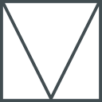

This icon can be changed easily at theme customize!
Your own logo?
Upload the new one at theme customize. Materialpress
Upload the new one at theme customize. Materialpress
The featured image will be the background! Materialpress theme by nutjane. Materialpress is a wordpress theme - adapted from Google Material Design Lite template. Enim labore aliqua consequat ut quis ad occaecat aliquip incididunt. Lalala Ex officia laborum et consequat duis.
Easily customize post banner, background, logo, social links, and more+. Materialpress theme by nutjane. Materialpress is a wordpress theme - adapted from Google Material Design Lite template. Enim labore aliqua consequat ut quis ad occaecat aliquip incididunt.
Download this wordpress theme now! Materialpress theme by nutjane. Materialpress is a wordpress theme - adapted from Google Material Design Lite template. Enim labore aliqua consequat ut quis ad occaecat aliquip incididunt. Lalala